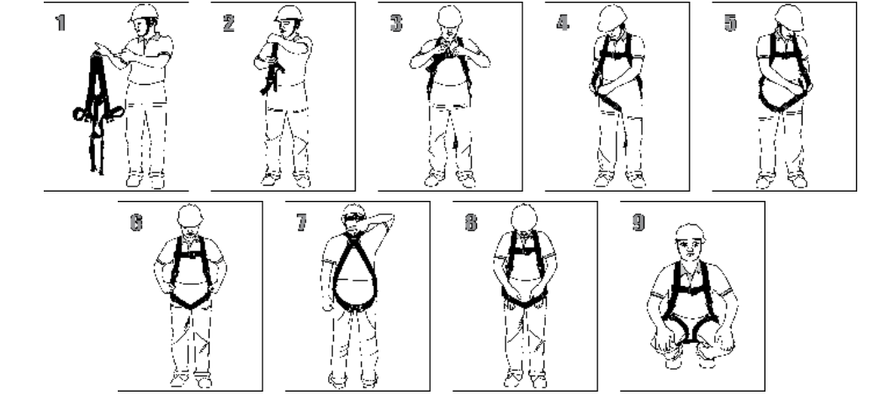

Aantrekken
Controleren
Voor elk gebruik moet het harnas visueel gecontroleerd worden door even je handen door de banden te laten glijden en te voelen op scherpe stukjes of stukjes die niet helemaal meer goed eruit zien. Mocht u twijfelen in het harnas, GEBRUIK HET HARNAS NIET!
Plaatje 1-3
Schuif de schouderbanden over de schouders, als een rugzak. Pas de pasvorm zo aan dat de D-ring in het midden van de rug zit, tussen de schouderbladen. Door de D-ring op de juiste manier te plaatsen, blijft u rechtop hangen mocht u eventueel vallen.
Plaatje 4-8
Pas de beenriemen aan voor een strakke, maar niet knellende pasvorm. De riemen mogen niet zo strak zitten dat het er voor zorgt rechtop te staan. De pasvorm is correct als u uw hand tussen uw bovenbeen en de band kunt schuiven.
Plaatje 9
Zodra alles is vastgemaakt, maakt u de laatste aanpassingen zodat alles goed aansluit, maar uw bewegingsvrijheid niet wordt beperkt. Steek eventuele riemer in de lushouders om te voorkomen dat ze blijven haken aan bouwmaterialen.
Nadat alle stappen zijn gevolgd controleer je je buddy en hij jou om er voor te zorgen dat er echt niks kan zijn wat je over het hoofd hebt gezien.

« Vorige
Volgende »